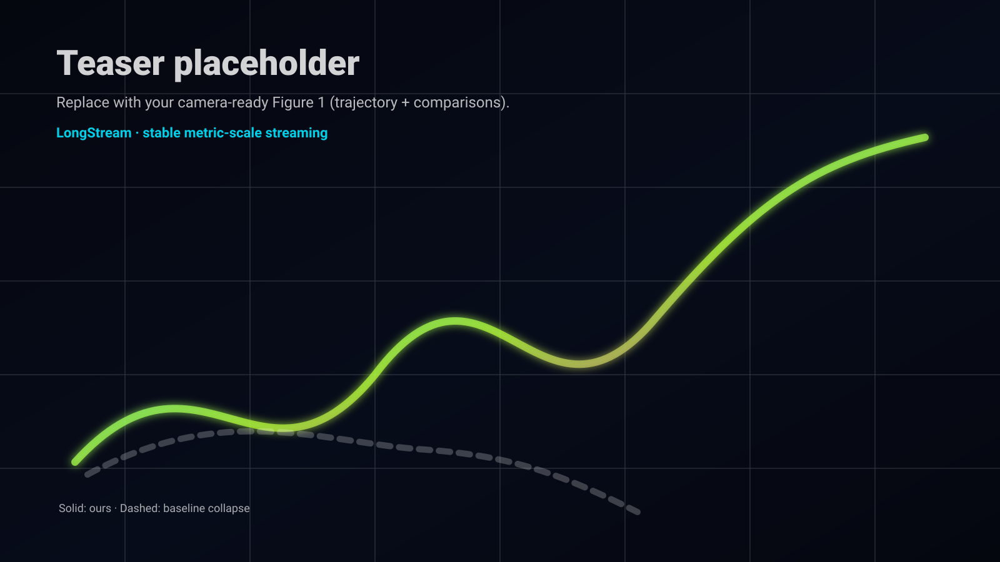
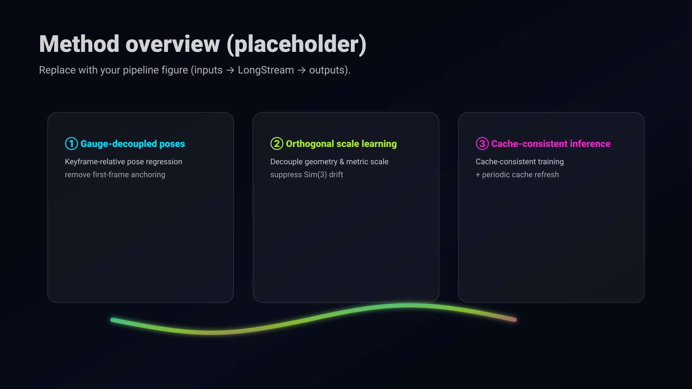
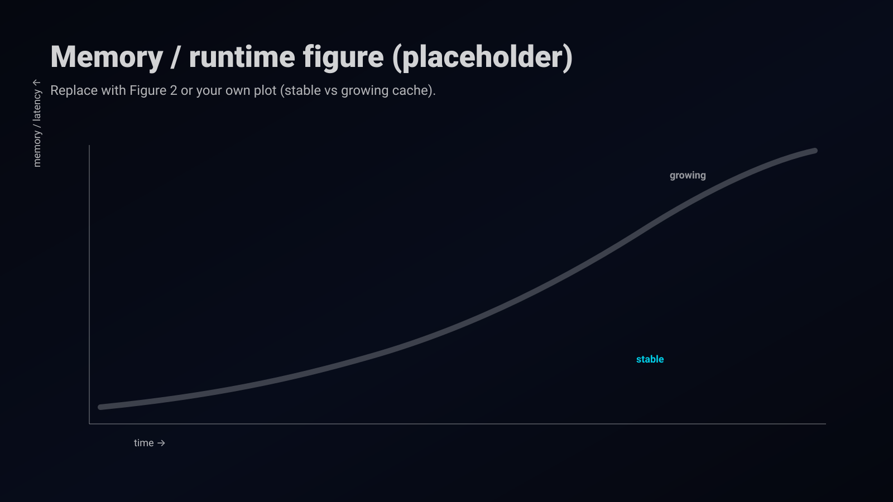

LongStream: Long-Sequence Streaming Autoregressive Visual Geometry
CVPR 2026

Abstract
LongStream introduces a gauge-decoupled design and cache-consistent inference for ultra-long streaming.
Long-sequence streaming 3D reconstruction remains a significant open challenge. Existing autoregressive models often fail when processing long sequences. They typically anchor poses to the first frame, which leads to attention decay, scale drift, and extrapolation errors. We introduce LongStream, a novel gauge-decoupled streaming visual geometry model for metric-scale scene reconstruction across thousands of frames. Our approach is threefold. First, we discard the first-frame anchor and predict keyframe-relative poses. This reformulates long-range extrapolation into a constant-difficulty local task. Second, we introduce orthogonal scale learning. This method fully disentangles geometry from scale estimation to suppress drift. Finally, we solve Transformer cache issues such as attention-sink reliance and long-term KV-cache contamination. We propose cache-consistent training combined with periodic cache refresh. This approach suppresses attention degradation over ultra-long sequences and reduces the gap between training and inference. Experiments show LongStream achieves state-of-the-art performance. It delivers stable, metric-scale reconstruction over kilometer-scale sequences at 18 FPS.
Method
Three pieces: gauge-decoupled poses, orthogonal scale learning, and cache-consistent inference.
Key ideas
- Remove first-frame anchoring. Regress keyframe-relative poses to turn long-range extrapolation into a constant-difficulty local task.
- Orthogonal scale learning. Decouple geometry learning from metric-scale estimation to suppress Sim(3) scale drift.
- Cache-consistent inference. Address attention-sink reliance and long-term KV-cache contamination via cache-consistent training and periodic cache refresh.

Results
Quantitative (ATE on KITTI) + qualitative stability on long streaming sequences.
What to look at
- Stability: trajectories stay coherent over thousands of frames.
- Metric scale: reduced drift on long-range sequences.
- Efficiency: stable memory/latency via cache handling.

| Method | Avg. | 00 | 01 | 02 | 03 | 04 | 05 | 06 | 07 | 08 | 09 | 10 |
|---|---|---|---|---|---|---|---|---|---|---|---|---|
| CUT3R | 185.89 | 651.52 | 296.98 | 148.06 | 22.17 | 155.61 | 132.54 | 77.03 | 238.39 | 205.94 | 193.39 | 209.78 |
| TTT3R | 190.93 | 546.84 | 218.77 | 105.28 | 11.62 | 153.12 | 132.94 | 70.95 | 180.57 | 211.01 | 133.00 | 177.73 |
| Stream3R | 190.98 | 681.95 | 301.40 | 158.25 | 102.73 | 159.85 | 135.03 | 90.37 | 261.15 | 216.31 | 207.49 | 227.77 |
| StreamVGGT | 191.93 | 653.06 | 303.35 | 157.50 | 108.24 | 160.46 | 133.71 | 89.00 | 263.95 | 216.69 | 209.80 | 226.15 |
| LongStream (Ours) | 92.55 | 46.01 | 134.70 | 3.81 | 1.95 | 84.69 | 23.12 | 14.93 | 62.07 | 85.61 | 21.48 | 51.90 |
Resources
Put all public links here (paper, code, data, video, contact).
BibTeX
Replace authors/venue once public.
@misc{longstream2026,
title = {LongStream: Long-Sequence Streaming Autoregressive Visual Geometry},
author = {Author A and Author B and Author C and Author D},
year = {2026},
note = {CVPR 2026},
}